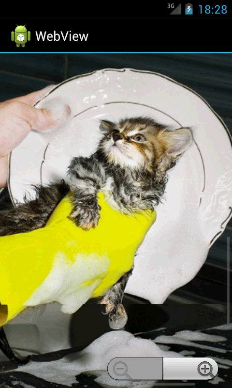

/* Моя кошка замечательно разбирается в программировании. Стоит мне объяснить проблему ей - и все становится ясно. */
John Robbins, Debugging Applications, Microsoft Press, 2000

/* Моя кошка замечательно разбирается в программировании. Стоит мне объяснить проблему ей - и все становится ясно. */
John Robbins, Debugging Applications, Microsoft Press, 2000
Загружаем локальные страницы и картинки
Загружаем данные при помощи loadData() и loadDataWithBaseURL()
Проблемы с кодировкой
WebSettings
Методы
Используем зум для просмотра
Набор номера из HTML
Прозрачность
Дополнительное чтение
Надеюсь, вы уже познакомились с базовым примером по созданию собственного браузера. Рассмотрим дополнительные возможности элемента WebView, который расположен в папке Composite на панели инструментов.
Если вы хотите загружать в WebView страницы не из интернета, а со своего приложения, то разместите нужные файлы в папке /res/assets, например, res/assets/mypage.html. Доступ к файлу вы можете получить через конструкцию file://android_asset:
myBrowser = (WebView)findViewById(R.id.mybrowser);
myBrowser.loadUrl("file:///android_asset/mypage.html");
Аналогично поступаем с картинками
<img src="file:///android_asset/myimage.gif">
Также можно загрузить файл из папки res/raw:
WebView.loadUrl("file:///android_res/raw/cat.html");
Если картинка находится на внешнем накопителе, то попробуйте вариант:
WebView webview = (WebView) findViewById(R.id.webView1);
String imageName = "cutecat.png";
String catUrl = "file://"
+ Environment.getExternalStorageDirectory().getAbsolutePath()
.toString() + "/" + imageName;
webview.loadUrl(catUrl);
Данные можно загрузить с помощью метода loadData():
String htmlText = "<html><body>Percent test: 100% </body></html>";
WebView mWebView = (WebView) findViewById(R.id.webView);
mWebView.loadData(htmlText, "text/html", "en_US");
Если текст простой, то этот способ подойдет. Но в данном примере встречается символ процента, который относится к спецсимволам и часть текста может оказаться недоступной. Если в тексте встречаются подобные символы, то лучше использовать метод loadDataWithBaseURL():
mWebView.loadDataWithBaseURL(null, htmlText, "text/html", "en_US", null);
Если вам приходится использовать loadData(), то спецсимволы можно заменить при помощи метода replace():
String webData = stringBuffer.toString(); // поступающие данные
webData = webData.replace("#", "%23");
webData = webData.replace("%", "%25");
webData = webData.replace("\\", "%27");
webData = webData.replace("?", "%3f");
webView.loadData(webData, "text/html", "UTF-8");
У меня есть программа, использующая WebView, которая доступна в Google Play. К моему удивлению, некоторые пользователи жаловались, что текст нечитаем, так как они видят только кракозябры. Особенно много жалоб было от пользователей с планшетами. Оказалось, что проблема довольна распространенная и обсуждается на форумах. Танцы с бубнами (установка явной кодировки UTF-8) не помогают. Нашёл один ответ, который у некоторых заработал, на всякий случай я его здесь оставлю.
// перед загрузкой данных (load...)
WebSettings settings = mWebView.getSettings();
settings.setDefaultTextEncodingName("utf-8");
Но я рекомендую просто использовать метод loadDataWithBaseURL(). Работает стабильно.
Элемент WebView по умолчанию просто загружает веб-страницу или другие HTML-данные, но не может исполнять JavaScript-сценарии и не имеет стандартных элементов управления, которые есть у браузера. Вы можете получить доступ к настройкам WebView через класс WebSettings, используя метод getSettings().
WebSettings webSettings = WebView.getSettings();
// включаем поддержку JavaScript
webSettings.setJavaScriptEnabled (true);
// устанавливаем строку User Agent
String ua = "Mozilla/5.0 (Linux; Android 4.1.1; HTC One X Build/JRO03C) AppleWebKit/537.31 (KHTML, like Gecko) Chrome/26.0.1410.58 Mobile Safari/537.31";
webSettings.setUserAgentString(String ua);
// другие настройки
webSettings.setUseWideViewPort(true);
Кстати, насчёт метода setUseWideViewPort(). Если вы используется WebView для подгрузки вашей страницы с сервера, то желательно провести некоторую оптимизацию.
// Resize contents to fit the screen.
webview.getSettings().setUseWideViewPort(true);
webview.setInitialScale(1);
webview.loadUrl("http://developer.alexanderklimov.ru/android");
Данный код масштабирует веб-страницу, чтобы она корректно отобразилась на экране. Вдобавок, на самой странице желательно прописать необходимые настройки в теге meta:
<head>
<title>Example</title>
<meta name="viewport" content="width=device-width, user-scalable=no" />
</head>
Другие возможные варианты:
<meta name="viewport"
content="
height = [pixel_value | device-height] ,
width = [pixel_value | device-width ] ,
initial-scale = float_value ,
minimum-scale = float_value ,
maximum-scale = float_value ,
user-scalable = [yes | no] ,
target-densitydpi = [dpi_value | device-dpi |
high-dpi | medium-dpi | low-dpi]"
/>
У WebView есть множество методов, которые позволяют добиваться полной функциональности как у обычного браузера - обновить страницу, перейти на предыдущую страницу и т.д. Часть методов представлена ниже:
Не забывайте, что WebView можно использовать не только для просмотра html-страниц, но и для просмотра изображений. Поэтому данный элемент вполне можно использовать как вьювер картинок, к тому же вы можете включить встроенный механизм зумирования:
mWebView = (WebView) findViewById(R.id.webView1);
// устанавливаем Zoom control
mWebView.getSettings().setBuiltInZoomControls(true);
// загружаем картинку (не забудьте установить разрешение на интернет)
mWebView.loadUrl("http://netsources.narod.ru/friday/alkocat.jpg");
this.setTitle("WebView");

В отличие от iPhone, в Android если для WebView подсунуть ссылку типа:
<a href='tel:451-56-17'>Позвонить</a>
то он попытается открыть ссылку и скажет, что страница не найдена. Для того, чтобы WebView корректно обрабатывала эту ссылку и позволила набрать номер телефона, необходимо ему передать свой кастомный WebViewClient примерно следующего содержания:
webView.setWebViewClient(new WebViewClient() {
@Override
public boolean shouldOverrideUrlLoading(WebView view, String url) {
if (url.indexOf("tel:") > -1) {
startActivity(new Intent(Intent.ACTION_DIAL, Uri.parse(url)));
} else {
view.loadUrl(url);
}
return true;
}
}
В данном случае нет необходимости указывать в манифесте специальные права на набор номера телефона, так как номер не набирается, а всего лишь передается для набора в стандартную программу по набору номера. Источник
Устанавливать прозрачность лучше программно. Встречал жалобы, что через XML это свойство не работает.
wv.setBackgroundColor(0x00000000);
Migrating to WebView in Android 4.4